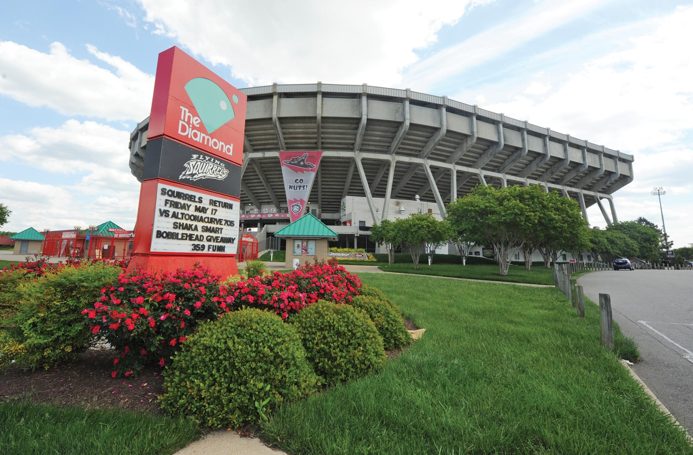

RVA Must Sees
Richmond Dairy Co.
Built in the 1930's and transformed into apartment building in the 1970's the this Richmond Landmark is a must see!
Richmond is the capital of the great state of Virginia, one of the original 13 states. As such there are a number of things one must do, when visiting the city.
I suggest starting with the James river, a staple of Richmond summers and how the city got it's name. Richmond's founder came up with the name as an homage to a similar city in London, which also sat next to a winding river.
Next I suggest stopping by The Diamond, to catch a Flying Squrriels game. During the holidays, the Diamond hosts various events for the community.

No trip to Richmond is complete without visiting one of our historic neighborhoods. One of my favorites is Church Hill. Home to a great BBQ restaurant, and where Patrick Henry gave his famous speech, Give me Liberty or Give me Death!"
When you are in Richmond all roads lead to Broad Street. It is the unoffical main street of Richmond also know as the street which never sleeps.
Another famous, or infamous depending on who you ask, street in Richmond is Monument Avenue. Monument avenue is widely known for the statues of Confederate soliders, but I am here to highlight the statue of Arther Ashe. The African American tennis phenome who went from practicing his serve in Battery Park to winning three grand slam titles.
There is no way to cover all of what Richmond has to offer, you just have to come and visit for yourself.